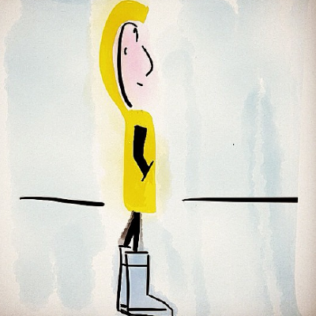

Data/Dev engineer for physical oceanography at LOPS-Ifremer, France.
- Education
-
Master degree: Marine Geophysics & Instrumentation
Engineering degree: Computer sciences & modelisation
- Skills
-
- Dev :Matlab, Python, Shell, Javascript
- Map :QGis, GMT, Leaflet
- Database :SQL Developer, MySQL
- Misc :Html, Illustrator, GitHub
- Experience
-
IFREMER-LOPSDev/Data Engineer 2016-today
- Physical oceanography data management (rsync, crontab, ...)
- Desktop/Web applications development (Matlab, Python, javascript) for oceanography
- Keep digging in data science and cool data display
- Sometimes in the middle of the Atlantic Ocean
- Copernicus DAC INSITU technical manager
- Coriolis database tech operations
- Keep digging in data science and cool data display
IUEM-LGOResearch Engineer
- Data processing (matlab, labview) for a marine electromagnetic streamer
- Reporting and valorisation of research projects
- Fieldwork (Greenland, Tanzania, Indonesia, France, ...)
- My tools
- Fedora
- Atom
- Visual Studio Code
- GitHub
- Leaflet
- Anaconda